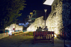
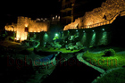
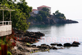
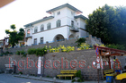
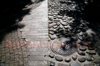
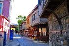
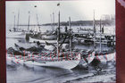
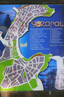

Sozopol
Sozopol used to be a great place for the summer holiday. It had perfect beaches, great cultural heritage and cheap lodging. Now it is overcrowded and too industrial.
- 
Different taste - 
Fort Wall
Moonlight
The beach after Harmani
Watter Attraction
Sozopol10
Harmani Beach
Historic Digs
Devastated
Anchor
Palms
Chapel
Central Beach
Old Town- 
Cliffs
Sozopol24
Fort wall in the daytime
Sozopol28
Sozopol29
Sozopol30
Sozopol31
Sozopol32
Sozopol33
Sozopol34
Sozopol35
Sozopol37
Fishing- 
Sozopol39
Yachts- 
Pavement
Art Galleries- 
Architecture
Sozopol44- 
Old photo of the port
Sozopol46
Old photo of the wind mill
Old photo of Sozopol
Sozopol49- 
Map
Sozopol54